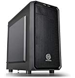
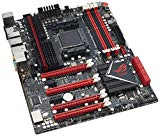
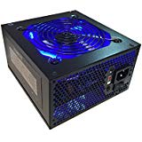
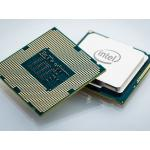
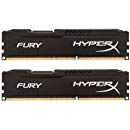
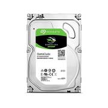
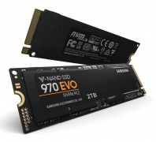
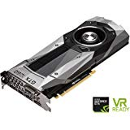
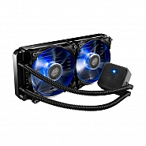

Chassis (case)
The Chassis of the computer contains all of the main components of the computer including the motherboard, CPU, RAM, Power Supply, and hard drive.
Motherboard
The Motherboard is the computer's main circuit board. The motherboard is a thin plate that holds your CPU, RAM and peripheral cards as well as being able to connect hard drives and optical drives. The motherboard connects directly or indirectly to every part of the computer.
Power Supply
The Power Supply is a piece of hardware that's used to convert the power provided from your outlet into useable power for the parts inside the computer case. The PSU converts alternating current (AC) into a continuous form of power that the components use, called direct current (DC).
Central Processing Unit (CPU)
 The Central Processing Unit also known as the processor or CPU is located centrally on the motherboard of your PC. The CPU is known as the 'brain' of your PC, and its job is to carry out commands given to it by the user. The CPU is usually a two-inch ceramic square with a silicon chip inside. The CPU is typically covered by a heatsink which is an object that absorbs heat from the CPU and disperses it. A processor's speed is measured in megahertz (MHz) and gigahertz (GHz). A faster processor can execute instructions more quickly.Random Access Memory (RAM)
RAM is your computer's short term memory. Here, your computer stores information from programs until it is needed. Short term memory is lost when the computer is turned off, therefore, you'll need to save any work you're currently working on, or lose it. RAM is measured these days in gigabytes (GB). The more RAM you have in your computerm the more things the computer can do at one time.
Hard Drive
A Hard Drive is where your software, documents, other files are stored. Your Hard Drive stores things in long term memory and so they are not lost when you turn off your PC. When you run a program or file, the hard drives copies some files into RAM so that they can be accessed more quickly. When you save, the data in RAM is copied back to the hard drive.
Optional: Solid State Drive
A Solid State Drive is a solid-state storage device that uses integrated circuit assemblies as memory to store data persistently. SSD's have no mechanical components, and are MUCH faster than a traditional hard drive.
Optional: Peripheral Cards
Several peripheral cards exist to expand the capability of your computer, but the most common are Graphics Cards Which are responsible for what you see on your monitor. If you like playing games, or rendering high quality video, you can add a discrete graphics card to improve performance.
Optional: Extra Cooling Solutions
Extra cooling solutions exist such as water cooling, additional fans, and air cooling. I suggest taking some time to do your own research on these if you wish to build a high-performance machine.